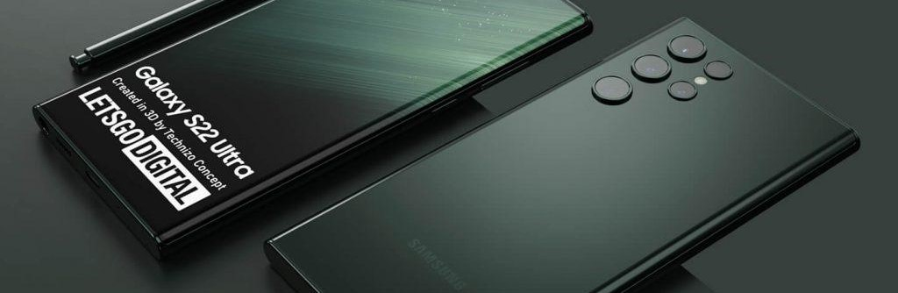

Samsung Galaxy S22
Начнём наш топ самых ожидаемых смартфонов 2022 года с флагманов известной корейской компании. Ожидается, что Samsung покажет новую линейку Galaxy уже 9 февраля. По информации корейских инсайдеров, смартфоны получат дизайн, схожий с Galaxy Note 20 Ultra: боковые грани корпуса скруглённые, а нижняя и верхняя — ровные. Версия S22 Ultra при этом даже получит фирменный стилус S Pen, которым ранее оснащали только гаджеты серии Note.
Известно, что компания существенно улучшила технологию взаимодействия пера с дисплеем. Заявлена задержка отклика в минимальные 2,8 мс. Если действительно удастся этого добиться, использование S Pen будет максимально реалистично имитировать написание текста настоящей ручкой на бумаге.Galaxy S22 получит дисплей диагональю 6”, а S22+ и S22 Ultra оснастят матрицами на 6,55” и 6,81” соответственно. Все это будут AMOLED-экраны с частотой 120 Гц. В зависимости от региона, в котором будет продаваться смартфоны, в них будет установлен один из топовых процессоров — Snapdragon 898 или Exynos 2200. По объёму оперативной памяти всё без изменений. Базовая и средняя модификации получат по 8 Гб, а в топовую Ultra встроят 12/16 Гб.
По инсайдерской информации, Galaxy S22 и S22+ оснастят камерой разрешением 50 Мп, телеобъективом и сверхширокоугольным модулем. Обе версии также будут иметь х3 оптический зум. Старшая модификация Ultra получит главный сенсор на 108 Мп, сверхширокоугольный объектив и две телефотокамеры с оптическим зумом х3 и х10.
Предполагается, что флагманы поступят в продажу в первом квартале 2022 года и будут доступны по цене на уровне прошлого поколения: около 800 долларов за базовую версию и 1200 за Ultra.
iPhone 14
Рассматривая ожидаемые новинки смартфонов 2022 года, мы не можем пропустить флагманы Apple. В январе в сети появились первые предполагаемые рендеры. Из хороших новостей — отсутствие надоевшей всем чёлки на передней поверхности корпуса. Её заменит аккуратный круглый вырез под фронтальную камеру и датчик Face ID.
Ожидается, что селфи-камера будет иметь широкоугольный объектив, который позволит вмещать в кадр больше людей. Датчик Face ID станет ещё более чувствительным, чем прежде. Это улучшит его работу в движении и в условиях недостаточной освещённости.
Новые iPhone могут стать толще, поэтому выступ тыльного блока с камерами станет менее выраженным. На рендерах, которые попали в сеть, заметны круглые кнопки регулировки громкости — такие были у iPhone 4. Техническую составляющую новых айфонов улучшат, хотя она и сейчас превосходит многих конкурентов. Будут доступны версии смартфонов с разным объёмом внутренней памяти — 128, 256, 512 и 1024 Гб.
Инсайдеры говорят об увеличении разрешения камер новых смартфонов. Также производитель может перейти к перископической конструкции объектива, благодаря которой его можно будет разместить вертикально — чтобы он сильно не выступал над поверхностью корпуса. В любом случае iPhone 14 позволит получать снимки более высокого качества.
Цены пока неизвестны, но ожидается, что базовая версия обойдётся в 850 долларов, а за топовый iPhone 14 Pro Max придётся отдать около 1150 долларов.